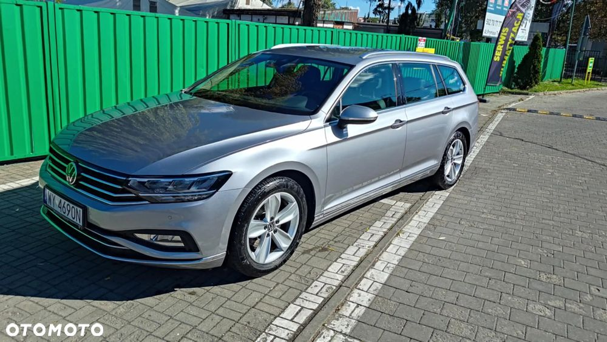
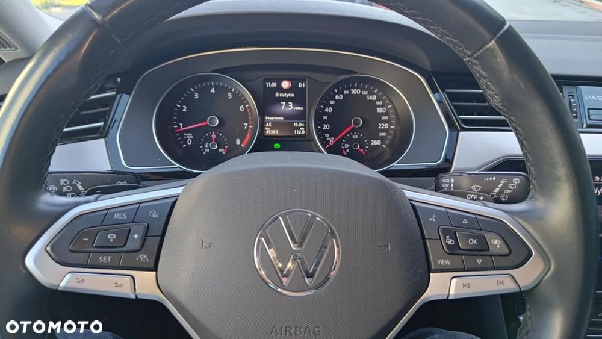
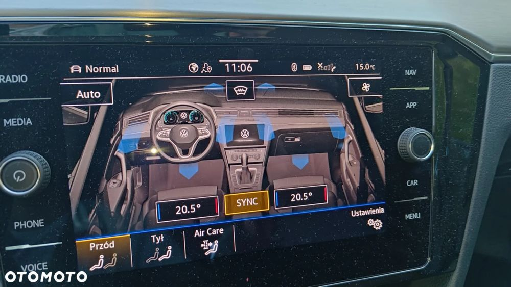
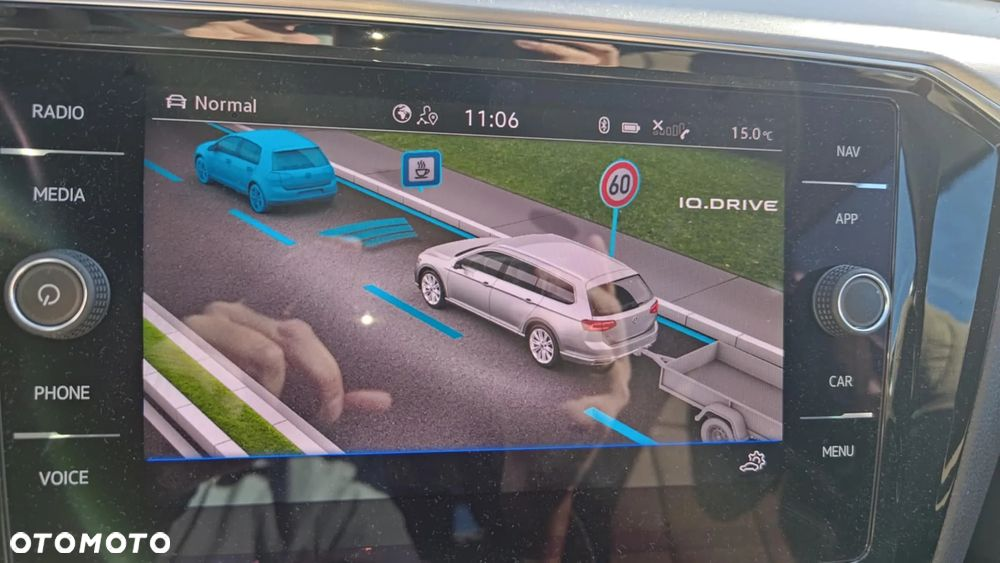
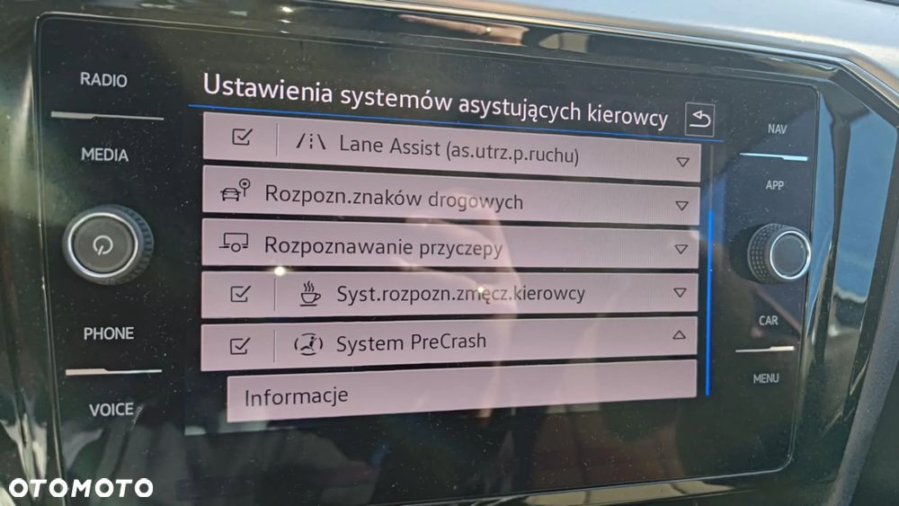
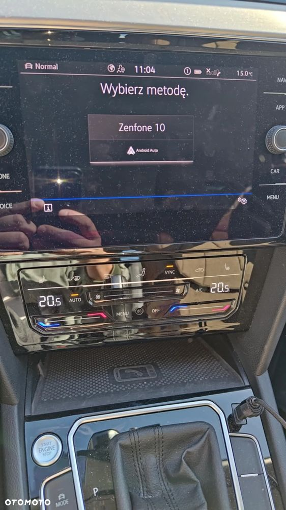
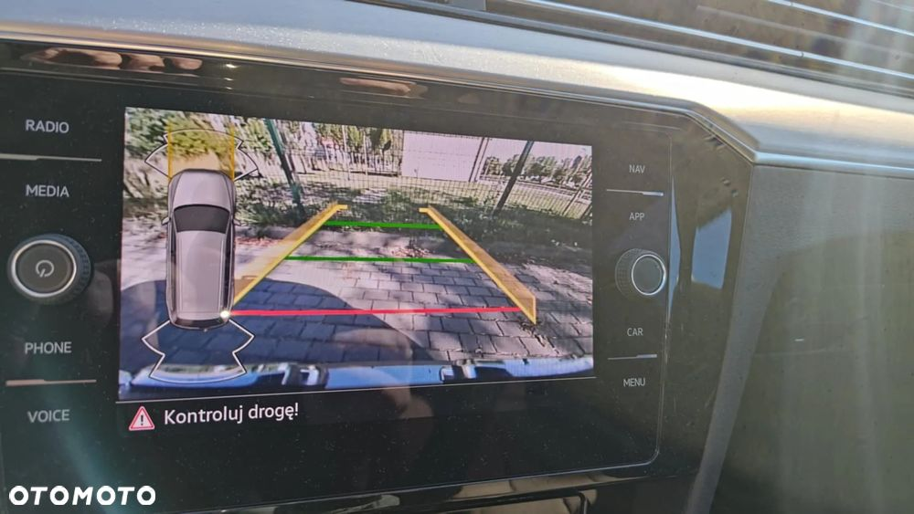
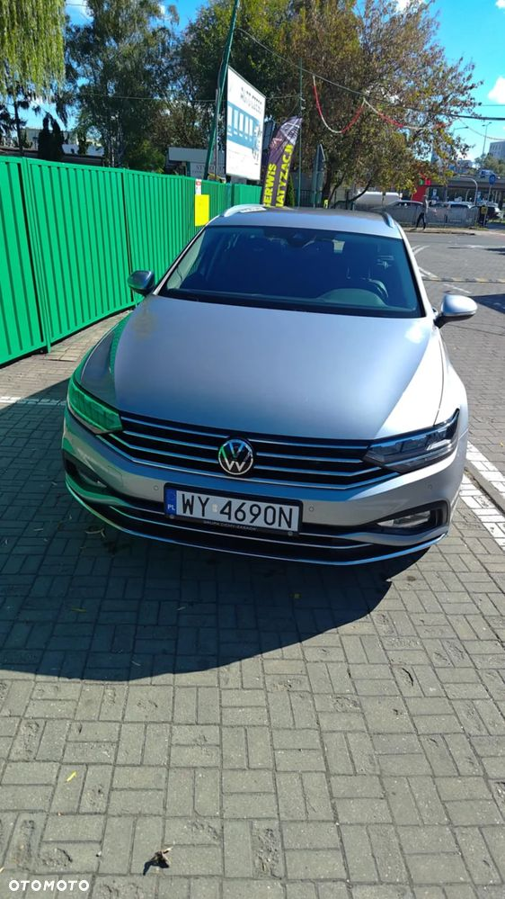
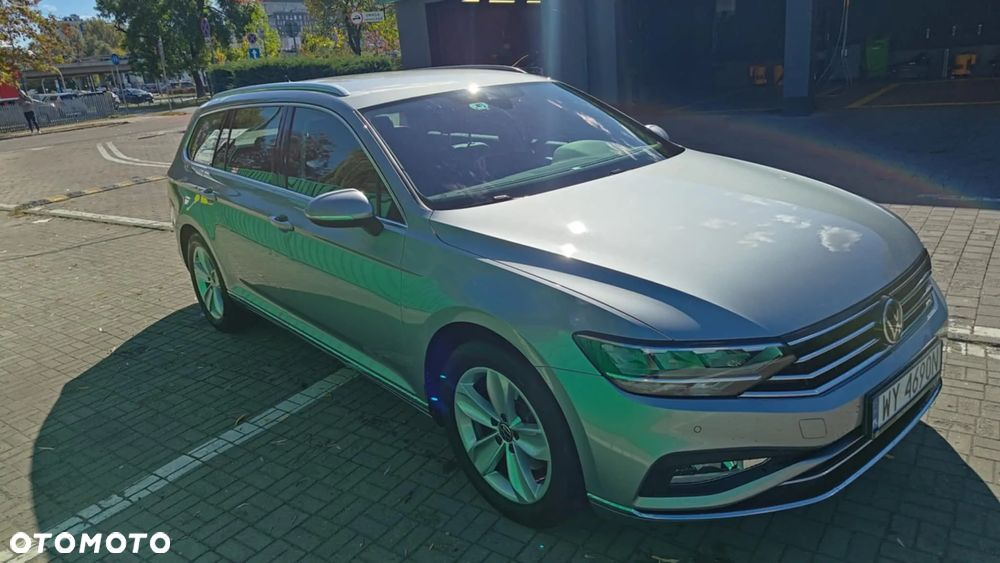
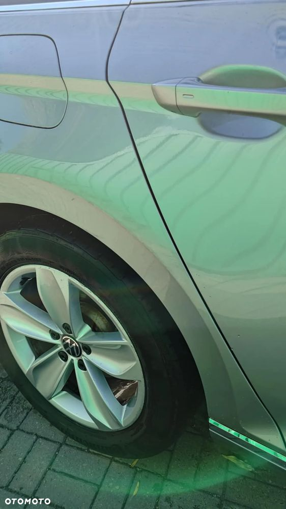

Auto kupione w salonie PL. Pierwszy właściciel. Auto w ciągłym użytkowaniu, przebieg powoli rośnie (obecnie 46500km)
Koła Obręcze aluminiowe Istanbul 7J x 17
Tapicerka siedzeń: środek - Alcantara, boczne części siedzeń, górna część podłokietnika – skóra Vienna
Aktywne przednie zagłówki, regulowane w dwóch płaszczyznach
Podgrzewane przednie fotele z oddzielną regulacją podgrzewania - Top-Komfort
Tapicerka drzwi i paneli bocznych ze skóry syntetycznej
Dwa gniazda USB (typu C)
Komputer pokładowy Premium z wyświetlaczem kolorowym
Czujnik zmierzchu - automatyczne włączenie świateł z funkcją Coming / Leaving Home
Reflektory główne LED Basic oraz światła do jazdy dziennej LED
Reflektory przeciwmgielne LED z funkcją statycznego doświetlania zakrętów
Szyby boczne i tylna termoizolacyjne
Kierownica 3-ramienna, multifunkcyjna, obszyta skórą z łopatkami do zmiany biegów
Lusterko wsteczne, automatycznie przyciemniane
Oświetlenie przestrzeni wokół nóg z przodu
Podświetlenie w listwach wykończeniowych w drzwiach
Składana podłoga bagażnika
Zbiornik paliwa 66 litrów
Aktywny tempomat ACC do 210 km/h z funkcją Stop & Go
Czujnik deszczu automatycznie uruchamiający wycieraczki
Czujniki parkowania z przodu i z tyłu z funkcją hamowania awaryjnego i wizualizacją na ekranie radia
Dysze spryskiwaczy ogrzewane (szyba przednia)
Gniazdo 12 V w konsoli środkowej z przodu
Gniazdo 12 V w konsoli środkowej z tyłu i w bagażniku
Klimatyzacja automatyczna Climatronic AirCare, trzystrefowa z filtrem antyalergicznym
Możliwość wyboru trybu jazdy: SPORT, NORMAL, ECO i INDIVIDUAL
Aktywny system ochrony pasażerów Pre-Crash
Asystent podjazdu
Elektromechaniczny hamulec postojowy z funkcją Auto Hold
ESP, ASR, ABS, MSR, wraz z asystentem siły hamowania i stabilizacją toru jazdy z przyczepą
Fatigue Detection - system wykrywający zmęczenie kierowcy
Isofix - przygotowanie do montażu 2 fotelików z uchwytami Top Tether, zgodnie z normą I-Size
Kurtyny powietrzne dla pasażerów z przodu i z tyłu
Poduszka powietrzna kierowcy i pasażera, poduszka pasażera z funkcją dezaktywacji, poduszka kolanowa dla kierowcy
Sygnalizacja spadku ciśnienia w oponach
System "Front Assist" z funkcją awaryjnego hamowania (dla ACC do 210 km/h)
System Lane Assist, TrafficJam Assist i system Emergency Assist
System wykrywający pieszych
System nawigacji satelitarnej Discover Media
System Easy Open / Easy Close
Brak oznaczenia modelu i silnika na klapie bagażnika
Rolety przeciwsłoneczne dla tylnych szyb bocznych, ustawiane manualnie
Bezprzewodowy App Connect - widok ekranu smartfona na ekranie nawigacji
Tuner cyfrowy DAB+
Siatka oddzielająca przestrzeń pasażerską od bagażowej, pionowa
